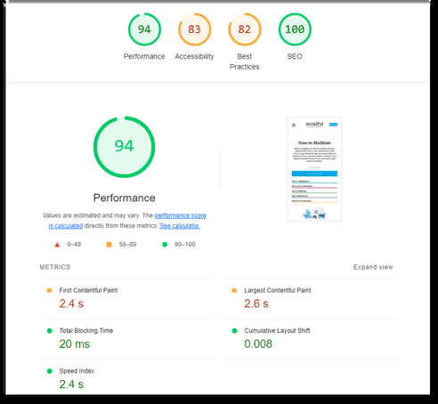
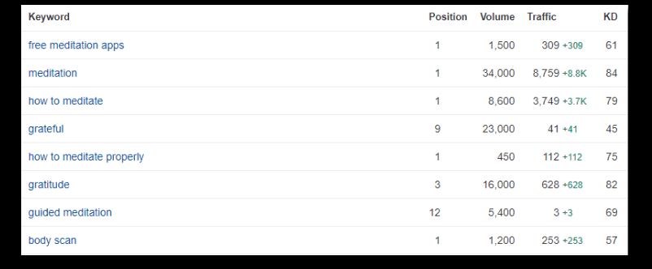
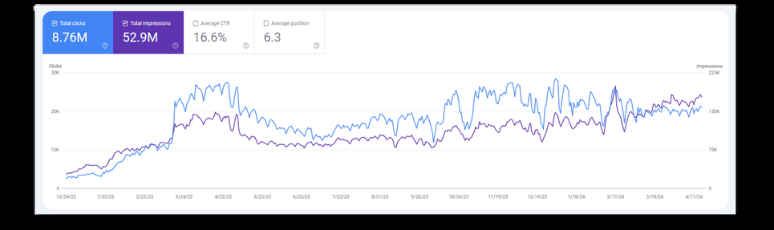

Case note · 02
Mindful Organization: 145% more sessions, 114% more revenue
Apr 2024 – Jun 2026 · Wellness · SEO Manager & IT Support
SEO Manager & IT Support. I owned SEO, AEO, conversion and technical site operations across WordPress and Shopify for a wellness community brand — which in practice meant I owned the traffic, the funnel, and the servers underneath both.
Mindful Organization · Apr 2024 – Jun 2026
-
+145%
YoY organic sessions
Mindful Organization · Apr 2024 – Jun 2026
-
+114%
YoY sales revenue
Mindful Organization · Apr 2024 – Jun 2026
-
+79%
YoY order volume
Mindful Organization · Apr 2024 – Jun 2026
01 — The situation
What was the situation at Mindful Organization?
Mindful Organization is a wellness community brand running on WordPress and Shopify, selling to a mindfulness audience. The commercial goal was revenue and orders, not sessions. The organic opportunity was high-value mindfulness keywords with genuine purchase intent behind them.
I was the SEO function and the IT function at the same time. That is unusual and it turned out to be the reason the results happened — when I found a technical problem I did not have to file a ticket and wait for it.
At a glance
- Role — SEO Manager & IT Support
- Scope — SEO, AEO, conversion optimisation, technical site operations
- Platforms — WordPress, Shopify
- Sector — Wellness and mindfulness, community and e-commerce
- Stack — Google Analytics, Mixpanel, Zapier, Mailchimp, schema and structured data, vector embeddings
Mindful Organization · role and scope
02 — The constraint
What was the constraint?
Mindful Organization’s site could not support the content strategy it already had. Core Web Vitals compliance stood at 5% of pages. Five percent.
At that level, publishing more content is not a growth strategy, it is a way to spend money slowly. Every new page lands on the same broken foundation. So the technical floor had to come up before, and then alongside, the content work — not after it.
Two platforms made this harder. WordPress and Shopify fail differently, and fixing one does not help the other.
Mindful Organization · Core Web Vitals compliance at the start
03 — What I did
What did I do at Mindful Organization?
Four workstreams ran at Mindful Organization between April 2024 and June 2026: raising the technical floor, engineering the content for the AI answer layer, building the funnel underneath the traffic, and automating the capture and the measurement.
Raised the technical floor
Core Web Vitals compliance went from 5% to 90% of pages, and page errors went to near zero. A lab run finished at Lighthouse 94 Performance and 100 SEO — LCP 2.6s, TBT 20ms, CLS 0.008. This was ongoing maintenance rather than a one-off sprint: database cleanups, custom-function refinements, plugin and permalink fixes, regular performance audits, and security reviews.
I also logged, prioritised and resolved bugs directly with developers, and kept SEO, IT and support documentation current so the work did not evaporate when someone left.
Core Web Vitals compliance, share of pages, start to end of the engagement
5% 90%
Mindful Organization · Apr 2024 – Jun 2026

Engineered content for the AI answer layer
This is the part I would want a technical reader to look at.
I built content to be retrieved by answer engines, not only to rank in a list of blue links. Concretely:
- Query fan-out coverage — covering the cluster of related questions an answer engine expands a query into, rather than the single head term.
- Schema and structured data — so the machine can identify what each part of a page actually is.
- Semantic density scoring — measuring whether a passage carries enough distinct meaning to be worth retrieving, rather than measuring word count.
- Deep-dive topical depth — depth per topic rather than breadth across many.
- Chunk-level optimization for RAG indexing — writing so that a page survives being split into chunks. A passage pulled out of context has to still make sense on its own, because that is the unit a retrieval system actually returns.
I integrated NLP, LLMs, RAG and vector embeddings into both the content and the site architecture, then tracked AI citation count as the outcome measure and grew it. Citation count, not ranking position, is the honest measure of whether an answer layer strategy is working.
The scope was 1,211 of roughly 5,000 pages, on an archive going back to 2011. Not the whole estate: the pages chosen were the ones a retrieval system would plausibly be asked for.
On the plain-search side the same work took #1 on Google for “meditation” (34K searches a month), “how to meditate” (8.6K), “free meditation apps”, “body scan” and “how to meditate properly”.
Mindful Organization · AI answer-layer mechanism
Built the funnel underneath the traffic
I wrote the GA4 purchase and dataLayer e-commerce tracking in PHP and gtag for paid subscriptions across six membership levels, connected WordPress and Shopify through their REST APIs, and ran Mixpanel event tracking to find where the funnel was losing people.
On-page work on the high-value mindfulness terms — titles, meta, headers — feeding conversion-optimised funnels: pop-ups, signup forms, CTAs, and gated e-books and webinars. Subscriptions grew to approximately 60,000.
Mindful Organization · subscriptions

Automated the capture and the measurement
Zapier flows linking Mailchimp to the lead capture, so a signup went where it needed to go without anyone touching it. Google Analytics and Mixpanel event tracking to find where people were dropping off, which is what told me which part of the funnel to work on next.
Mindful Organization · automation and analytics stack
04 — What it produced
What were the measured results?
Andrew Hoang, SEO Manager & IT Support at Mindful Organization from April 2024 to June 2026, drove 145% year-over-year organic sessions, 114% year-over-year sales revenue and 79% year-over-year order volume, and lifted Core Web Vitals compliance from 5% to 90% of pages.

| Metric | Result | Period |
|---|---|---|
| Organic sessions, year over year | +145% | Apr 2024 – Jun 2026 |
| Sales revenue, year over year | +114% | Apr 2024 – Jun 2026 |
| Order volume, year over year | +79% | Apr 2024 – Jun 2026 |
| Core Web Vitals compliance, share of pages | 5% → 90% | Apr 2024 – Jun 2026 |
| Page errors, after ongoing maintenance | Near zero | Apr 2024 – Jun 2026 |
| Subscriptions, level reached | ~60,000 | Apr 2024 – Jun 2026 |
![Shopify admin dashboard for Mindful Organization showing 593,276 sessions up 145 percent, total sales up 114 percent and 9,575 orders up 79 percent, each marked with a green up arrow, alongside a 1.3 percent conversion rate marked with a grey down arrow at 34 percent. The 365-day comparison runs 7 June 2024 to 6 June 2025 against 8 June 2023 to 6 June 2024. Four black bars cover the client's absolute revenue figure, the payout balance, the currency axis and the unfulfilled, high-risk and chargeback order counts.](../assets/img/work/mindful-shopify-growth.png)
AI citations went from 768 to 12,465 across the engagement — a 16x increase, and the outcome the answer-layer work was aimed at. It is a start-and-end pair rather than a tracked series, which is the limitation section 07 returns to. The consulting page describes how I instrument it now.
05 — How it was measured
How were the results measured?
Every headline figure on this page is a year-over-year comparison across the Mindful Organization engagement, April 2024 to June 2026, the period I held the SEO Manager & IT Support role.
Organic sessions come from the site analytics. I ran Google Analytics and Mixpanel event tracking on the estate, which is also what I used to find where people were dropping out of the funnel. Sales revenue and order volume come from the store’s own commerce reporting rather than from an analytics estimate — they are orders the business was actually paid for. Core Web Vitals compliance is a share of pages, not a single lab score: 5% of pages passing at the start, 90% at the end.
All three headline numbers are recorded in both source documents behind this site. Organic sessions at 145%, sales revenue at 114% and order volume at 79% appear in the resume and in the 19 September 2026 portfolio deck alike; the 13 September deck carried only two of the three, which is what an earlier version of this note said. Where the two documents disagree about a figure anywhere on this site, both numbers are published with their own source line and never merged or averaged.
06 — Reading the gap
07 — What I would do differently
What would I do differently at Mindful Organization?
Three things, and all three are about sequencing rather than about the work itself.
I would front-load the Core Web Vitals work instead of running it as ongoing maintenance
Going from 5% to 90% as a continuous programme meant content published in the early months landed on pages that were still failing. That content had to earn its position twice. Concentrating the technical fix into a single early push would have made every page published afterwards more valuable from day one.
I would instrument AI citation tracking before doing the answer-layer work, not alongside it
Citations went 768 → 12,465, which is the right measure moving the right way. What I have is a start and an end, not a series — so the growth cannot be attributed to specific changes, chunk-level structure versus schema versus topical depth. Next time the measurement goes in first and is read continuously, so the individual mechanisms can be told apart.
I would close the conversion gap the session growth revealed
Sessions grew 145% and orders grew 79%. That gap is the clearest remaining opportunity in this account and I would put the next quarter of effort into conversion rather than into more traffic.
08 — Next
Where next?
The Phibious case study is the enterprise counterpart to this one: Bridgestone, Cleanipedia and Schneider Electric, at a scale where nothing ships without someone else’s release process. The work index holds every engagement and the full results table, and the consulting page describes the technical SEO and AEO work above as something you can buy.